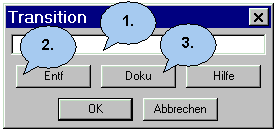

Der Transition Dialog |
|
 1. Geben Sie hier den Namen der Transition ein. 2. Um den aktuellen Transition zu entfernen. Wenn Sie 'Entf' gedrückt haben, müssen Sie anschließend OK klicken, um das Entfernen auszuführen. Nach einer nochmaligen Abfrage wird der Transition gelöscht. 3. Hiermit gelangen Sie in den Doku-Dialog.
|
Zurück zur Dialog Übersicht |
Zurück zur Startseite |